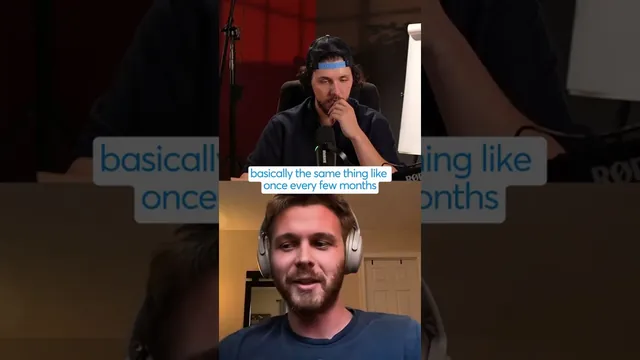

콜드메일 후속 연락, 이렇게 하세요

원본 영상 보기 →
- 후속 메일 최적화 대신 첫 메일 최적화예요
- TAM이 크면 후속이 아니라 재발송 주기가 전략이에요
- 개인화는 비용 대비 과대평가됐어요
한 줄 요약
콜드이메일(cold email) 대행사를 운영하는 게스트가 blitz(초고속 문답)로 실전 세팅과 전략을 풀어놓은 내용이에요. 핵심 주장이 꽤 과감합니다. "후속 메일(follow-up)은 최대 1번, 사실은 0번이 나을 때가 많다"는 거예요.
전체 내용 정리
콜드이메일 인프라는 이미 정답이 수렴했어요: Google 받은편지함, 도메인당 2개, 루트 도메인
빠른 문답으로 정리된 인프라 세팅이에요.
받은편지함(inbox)은 Microsoft보다 Google입니다. 한 도메인에 받은편지함은 4개가 아니라 2개예요. 서브도메인(subdomain)보다 루트 도메인(root domain)이고요. 도메인은 오래된(aged) 것이 더 낫지만 새(new) 도메인도 여전히 성과가 잘 나온다고 해요.
콜드이메일 본문에 링크를 넣고도 좋은 성과를 내는 방법은 "찾아본 바로는 없다"고 잘라 말합니다.
개인화(personalization)보다 스핀택스(spin tax)
스핀택스는 씁니다. 그리고 스핀택스와 개인화 중 하나를 고르라면 솔직히 스핀택스라고 답해요. "개인화는 과대평가됐다(personalization is overrated)"는 거죠.
참고로 스핀택스는 이메일 문구의 특정 구간에 여러 대체 표현을 넣어두고, 발송할 때 무작위로 조합해 수신자마다 조금씩 다른 문장이 가게 하는 기법이에요. 스팸 필터 회피와 발송 다양성 확보가 목적입니다.
후속 메일은 최대 1번 — 그리고 사실 0번이 낫다고 해요
후속(follow-up)은 절대 최대 1번이라고 합니다. 진행자가 "말도 안 된다"고 반응하자 이유를 확장해요.
이들이 상대하는 회사는 TAM(전체 도달 가능 시장)이 매우 큽니다. 그래서 후속을 보낼 필요 자체가 없다는 거예요.
논리가 이렇습니다. 2단계 시퀀스를 보내는데 2번째 단계가 더 성과가 좋다면, 그 2번째를 그냥 1번째로 만들면 더 잘 된다는 거죠. 많은 사람이 아는 Eric도 이 개념을 많이 얘기했다고 언급해요.
그래서 목표는 "먹히는 오퍼(an offer that bangs)"를 하나 찾는 겁니다. 그리고 TAM 한도가 그 정도라면 몇 달에 한 번씩 거의 같은 메일을 다시 보내는 거예요. 이게 성과를 찾는 가장 좋은 방법이라는 결론입니다.
엔터프라이즈에 파는 클라이언트는 받지 않아요
엔터프라이즈(enterprise) 대상으로 판매하는 클라이언트를 받겠느냐는 질문에 "아니오"라고 답합니다. 네트워크에 좋은 추천 파트너(referral partner)가 많아서 그런 건은 넘긴다(refer out)고 하네요.
ICP 찾기가 어려울 때: Instantly의 AI 에이전트 파인더 툴
Instantly가 지난 12개월간 내놓은 것 중 가장 좋았던 것으로 Instantly AI 에이전트(파인더 툴)를 꼽아요.
이들의 TAM은 매핑이 악명 높게 어렵다고 합니다. 제품 기준이 아니라 "접촉하려는 사람들이 다시 누구를 상대로 서비스하는가"를 기준으로 잡아야 하기 때문이에요. 오랫동안 특정 ICP(이상적 고객군)를 잡기 힘들었는데, Instantly의 AI 에이전트 파인더 툴이 지금까지 써본 것 중 그 ICP를 가장 잘 찾아줬다고 하네요.
화면 밖 생활
Ottawa에 계속 살 거냐는 질문엔 "확실히 아니다, 너무 춥다"고 답해요.
딜리버러빌리티(deliverability) 대시보드를 안 볼 때 뭘 하냐는 질문엔 거의 그것만 본다고 농담하고요. 헬스장, 스크린에서 벗어난 야외 시간, 해변이 있는 곳으로 가서 서핑을 한다고 말합니다. 이 일을 궤도에 올려 제대로 된 서비스를 하려면 주 6~7일이 필요하다고 덧붙이네요.
핵심 인사이트
- 후속 메일 최적화 대신 첫 메일 최적화예요: 2번째 메일이 더 잘 먹힌다는 건 그 메시지를 1번째로 올리라는 신호입니다. 시퀀스 길이를 늘리는 문제가 아니라, 가장 강한 한 방을 앞으로 당기는 문제로 보는 거죠.
- TAM이 크면 후속이 아니라 재발송 주기가 전략이에요: 도달 가능 대상이 충분히 크면, 후속 시퀀스 대신 "먹히는 오퍼를 몇 달 주기로 거의 그대로 반복 발송"이 성과를 냅니다.
- 개인화는 비용 대비 과대평가됐어요: 수신자별 리서치보다 스핀택스로 발송 다양성만 확보하는 게 실전에서 낫다는 현장 판단입니다.
- 세팅은 논쟁이 아니라 실행의 영역이에요: Google 받은편지함 / 도메인당 2개 / 루트 도메인 / 본문 링크 금지. 이미 답이 정해진 체크리스트로 취급합니다.
오늘 당장 해볼 것
- 현재 돌리고 있는 콜드이메일 시퀀스의 단계별 응답률을 뽑아보세요. 2번째 이후 메일이 1번째보다 반응이 좋으면, 그 문구를 1번째로 바꿔 다음 배치에서 테스트하시면 됩니다.
- 후속 메일 개수를 1개로 줄이고, 대신 "먹히는 오퍼" 하나를 정해 2~3개월 뒤 같은 리스트에 거의 동일하게 재발송하는 일정을 캘린더에 잡아보세요.
- 대행사에 맡기고 있다면 세팅을 점검 요청하세요. 받은편지함이 Google인지, 도메인당 몇 개인지, 루트 도메인인지, 본문에 링크가 들어가는지 물어보시고요. 링크가 있다면 빼는 버전과 나눠서 비교해달라고 해보세요.
- 접촉 대상(ICP)이 불명확하면 Instantly의 AI 에이전트나 파인더 툴로 리스트를 한 번 뽑아, 기존 수동 리스트와 겹치는 비율을 비교해보세요.